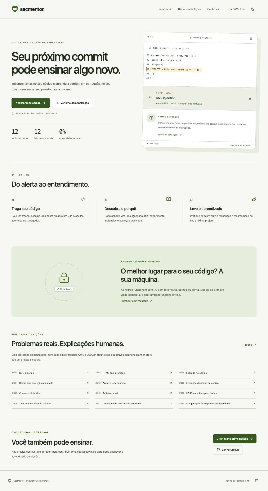
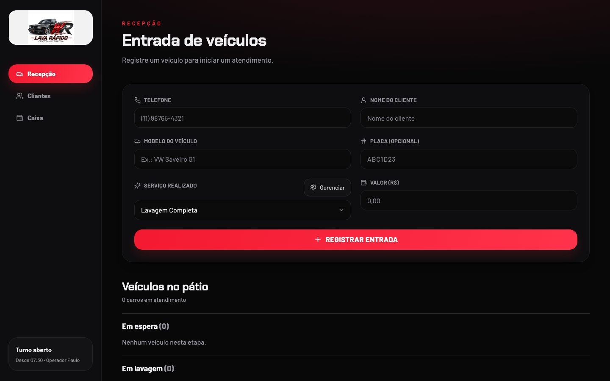
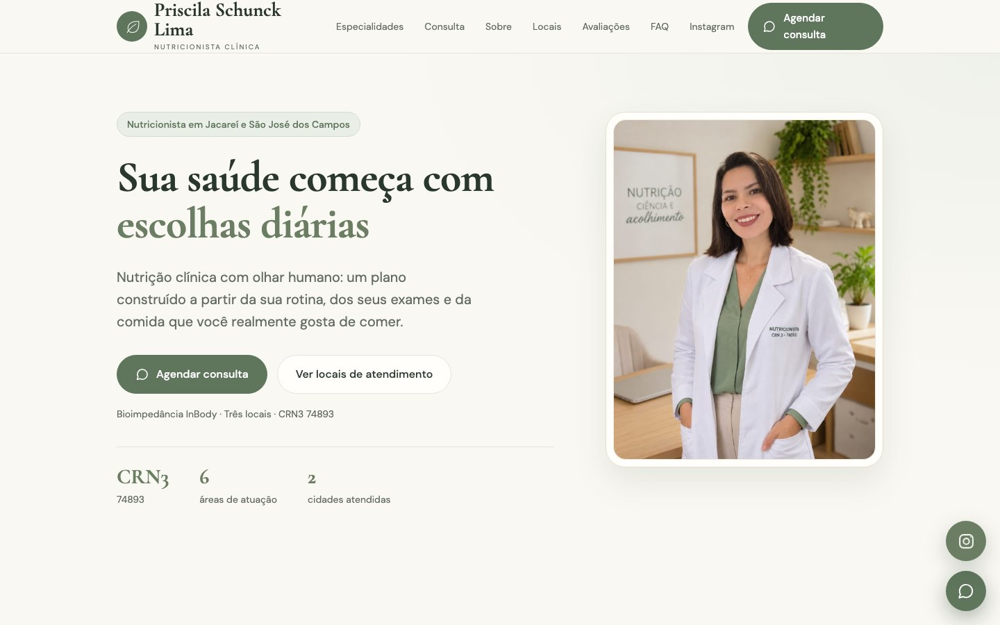
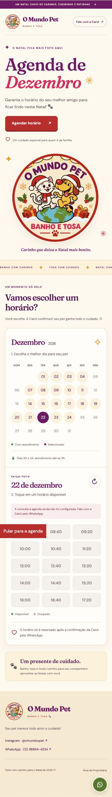
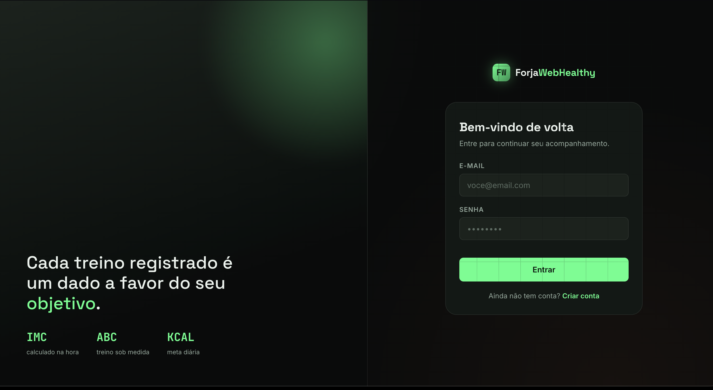
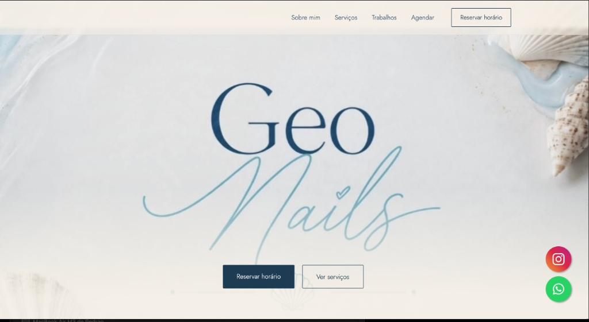
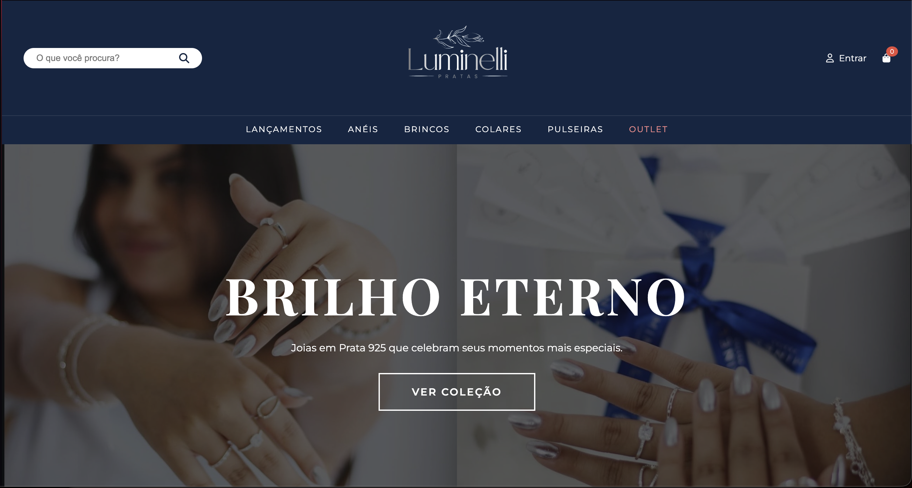
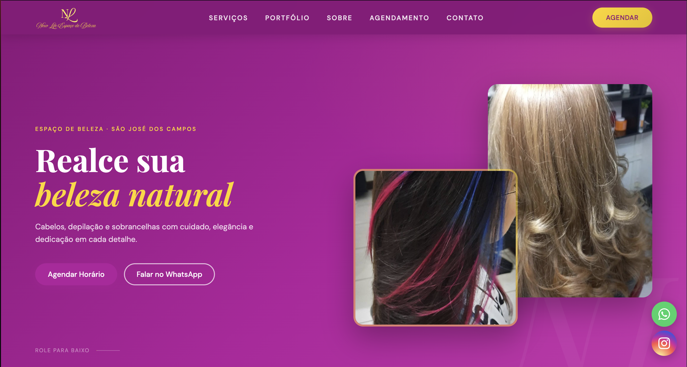
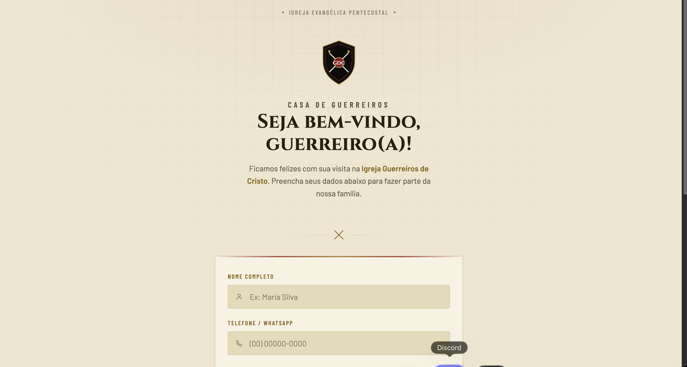

Projetos
Pedro Neto — Personal Trainer
Problema: Apresentar a consultoria online e organizar o contato e os agendamentos de novos alunos.
Solução: Site responsivo com planos de acompanhamento, metodologia, resultados, formulário de agendamento e área administrativa.
Atuação: Desenvolvimento Full Stack, interface responsiva, integração de agendamentos e contato pelo WhatsApp.
HTML • CSS • JavaScript • Node.js • Express • Supabase

SecMentor
Problema: Tornar o aprendizado de segurança de código mais acessível, com explicações práticas em português.
Solução: Mentor educativo com análise estática, lições, quizzes e relatórios, disponível no navegador, na CLI e em extensão para VS Code. O núcleo funciona offline.
Atuação: Desenvolvimento do monorepo, analisador, playground e recursos educativos, com validação por testes automatizados.
TypeScript • React • Node.js • Vite • Tailwind CSS • PWA • Vitest • Playwright

WR Lava Rápido
Problema: Centralizar a operação do lava-rápido, acompanhando os veículos no pátio, os clientes e as movimentações do caixa.
Solução: Sistema com recepção, controle de atendimentos, cadastro de clientes e veículos, histórico de serviços, pagamentos, despesas e indicadores de CRM.
Atuação: Desenvolvimento da aplicação React, regras de negócio, edição sincronizada de cadastros e persistência local dos dados.
React • TypeScript • Vite • Tailwind CSS • Local Storage

Priscila Schunck — Nutricionista
Problema: Reunir informações sobre especialidades, locais de atendimento e formas de agendar uma consulta nutricional.
Solução: Site profissional com nutrição clínica e oncológica, cirurgia bariátrica, saúde intestinal, locais de atendimento e solicitação de consulta pelo WhatsApp.
Atuação: Desenvolvimento Frontend, layout responsivo, formulário de agendamento e otimização do conteúdo para buscadores.
HTML • CSS • JavaScript • SEO • UI/UX

O Mundo Pet — Agenda de Natal
Problema: Facilitar a consulta de horários de banho e tosa durante a demanda de dezembro.
Solução: Agenda interativa com disponibilidade de horários, seleção de serviços e solicitação pelo WhatsApp. A proprietária confirma os atendimentos e controla os horários pelo Google Sheets.
Atuação: Desenvolvimento do site, formulário de atendimento e integração com Google Sheets e Apps Script.
HTML • CSS • JavaScript • Google Sheets • Google Apps Script

Radar Cidadão
Problema: Dificuldade de acesso e interpretação de dados públicos sobre atuação de deputados.
Solução: Desenvolvimento de uma aplicação web para centralizar, processar e exibir essas informações de forma clara e acessível.
Atuação: Atuei em Frontend e Backend.
Python • Flask • MySQL • HTML • CSS • JavaScript • APIs REST • Docker

Forja
Problema: Dificuldade na criação e gestão centralizada de rotinas de exercícios e planos alimentares personalizados baseados em métricas corporais.
Solução: Plataforma com autenticação, perfil do usuário, planos de treino e diário alimentar com cálculo de metas calóricas e acompanhamento dos registros.
Atuação: Desenvolvimento da interface e da lógica de treinos e metas calóricas, com integração ao Supabase para autenticação e persistência dos dados.
HTML • CSS • JavaScript • Supabase Auth • PostgreSQL

Geo Gomez Nails
Problema: Falta de uma plataforma online elegante e eficiente para gestão de horários e apresentação do portfólio de serviços de unhas.
Solução: Site responsivo com apresentação de serviços, portfólio e formulário de pré-agendamento que prepara a solicitação de atendimento pelo WhatsApp.
Atuação: Desenvolvimento Frontend, identidade visual, navegação responsiva e integração do formulário de pré-agendamento com o WhatsApp.
HTML • CSS • JavaScript • UI/UX

Luminelli pratas
Problema: Visualização dos itens do estoque e falta de atividade de E-commerce.
Solução: Desenvolvimento de uma aplicação web para melhorar a visualização e implementar a atividade de E-commerce.
Atuação: Atuei em Frontend, Backend e Banco de Dados.
HTML • CSS • JavaScript • Supabase • PostgreSQL

New Life Beauty Salon
Problema: O salão não possuía presença digital profissional, dificultando a divulgação de serviços, horários e formas de contato com clientes.
Solução: Desenvolvimento de um site moderno, responsivo e intuitivo para apresentar serviços, equipe, galeria de trabalhos e facilitar o agendamento via WhatsApp.
Atuação: Atuei no desenvolvimento completo do Frontend, estruturação visual, experiência do usuário (UI/UX) e integração de contato direto.
HTML • CSS • JavaScript • UI/UX

Igreja Guerreiros de Cristo
Problema: Necessidade de um sistema de cadastro online para acolher novos visitantes e centralizar a coleta de dados de forma eficiente.
Solução: Desenvolvimento de uma landing page elegante com um formulário interativo focado na experiência do usuário para captação dessas informações.
Atuação: Atuei no desenvolvimento completo do Frontend.
HTML • CSS • JavaScript